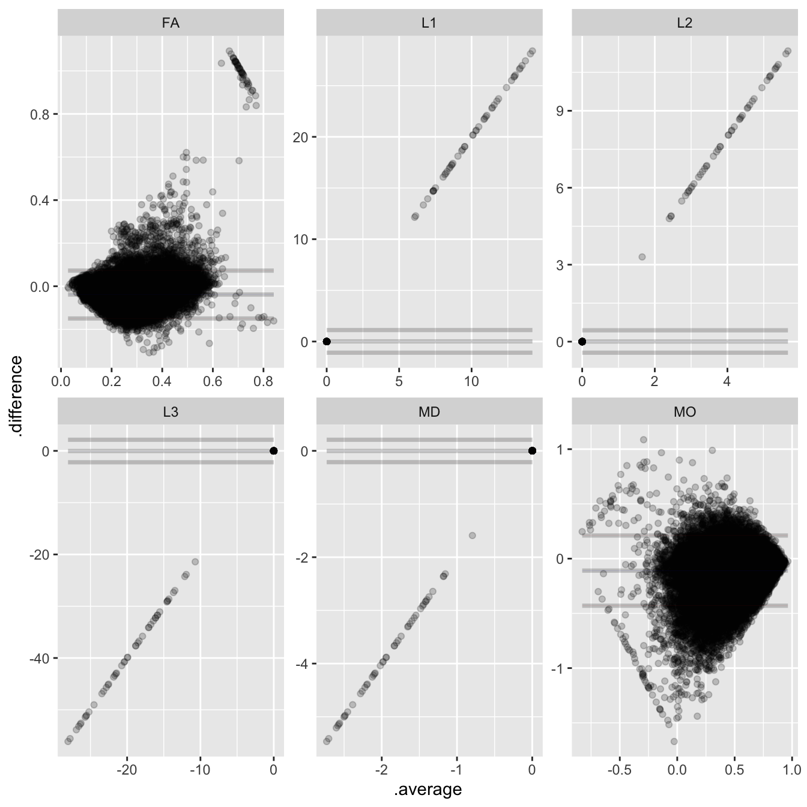
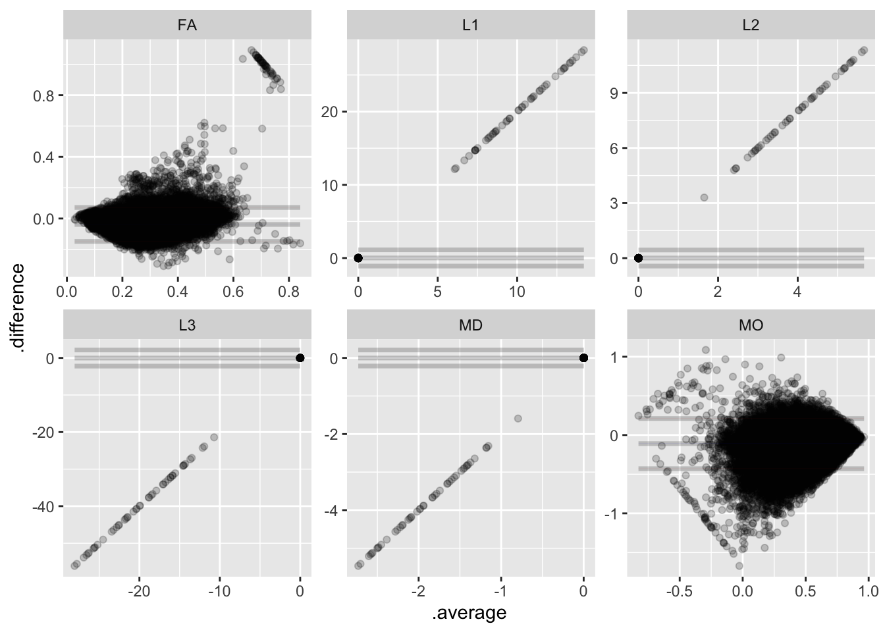

library(agree)
library(dplyr)
library(duckplyr)
library(fs)
library(ggplot2)
library(readr)
library(stringr)
library(tidyr)14 Summarized Diffusion Tensor Fitting
The Chapter 13 products provide voxel-wise outputs in a raw format that will be familiar to many diffusion imaging experts. To facilitate analyses, A2CPS has extracted those voxel-wise maps into regional summary statistics and repackaged them into a tabular format. This kit covers the repackaged structure.
As a brief primer, the diffusion tensor model produces several scalar metrics that are commonly used to assess white matter microstructural integrity. The two most common are: - Fractional Anisotropy (FA): A measure of the degree to which diffusion is highly directional. High FA typically indicates intact, densely packed, and highly myelinated white matter tracts (like a bundle of straws), whereas low FA suggests less directional organization (like in gray matter or cerebrospinal fluid). - Mean Diffusivity (MD): The overall rate of diffusion within a voxel, regardless of direction. Higher MD generally reflects lower cellular density or more free water (e.g., in ventricles or areas of inflammation/edema).
14.1 Starting Project
14.1.1 Locate Data
On TACC, the data are stored underneath the releases. For example, data release v2.1.0 is underneath
/corral-secure/projects/A2CPS/products/consortium-data/pre-surgery-release-2-1-0Paths in this kit are written relative to that release folder, so the neuroimaging data are underneath mris.
The derivatives are underneath derivatives/postdtifit. Let’s take a look.
$ ls postdtifit/
diffusion_regional diffusion_regional_stats diffusion_regional_stats.json14.1.2 Extract Data
The tabular data is in diffusion_regional_stats. As usual, the tables are in parquet files that have been partitioned in a hive style. Let’s take a look at the data dictionary diffusion_regional_stats.json.
{
"index": {
"LongName": "Index",
"Description": "Integer index of region in atlas"
},
"metric": {
"LongName": "Diffusion Metric",
"Description": "Scalar values derived from diffusion data",
"Levels": {
"FA": "Fractional Anisotropy",
"L1": "First Eigenvalue",
"L2": "Second Eigenvalue",
"L3": "Third Eigenvalue",
"MD": "Mean Diffusivity",
"MO": "Mode of Anisotropy"
},
"TermURL": "https://fsl.fmrib.ox.ac.uk/fsl/docs/#/diffusion/dtifit?id=outputs-of-dtifit"
},
"sub": {
"LongName": "Subject",
"Description": "Study Participant, BIDS Subject ID",
"TermURL": "https://bids-specification.readthedocs.io/en/v1.9.0/appendices/entities.html#sub"
},
"ses": {
"LongName": "Session",
"Description": "Visit, Protocol, BIDS Session ID",
"Levels": {
"V1": "baseline_visit",
"V3": "3mo_postop"
},
"TermURL": "https://bids-specification.readthedocs.io/en/v1.9.0/appendices/entities.html#ses"
},
"shells": {
"LongName": "B-Value Shells",
"Description": "Which b-value shells were included in the tensor model",
"Levels": {
"b1000": "Only the b=1000 shell (15 directions)",
"multishell": "All shells/b-values"
}
},
"roi": {
"LongName": "Region of Interest",
"Description": "Full name for the region of interest"
},
"mean": {
"LongName": "Mean",
"Description": "Average of the metric within given region"
},
"minimum": {
"LongName": "Minimum",
"Description": "Minimum of the metric within given region"
},
"maximum": {
"LongName": "Maximum",
"Description": "Maximum of the metric within given region"
}
}Next, peak at the table.
diffusion_regional_stats <- read_parquet_duckdb(
"data/pre-surgery/mris/derivatives/postdtifit/diffusion_regional_stats"
) |>
collect()
head(diffusion_regional_stats)| index | metric | sub | ses | shells | roi | mean | minimum | maximum |
|---|---|---|---|---|---|---|---|---|
| 1 | FA | 10003 | V1 | b1000 | Middle cerebellar peduncle | 0.1998886 | 0.0285900 | 0.5026317 |
| 2 | FA | 10003 | V1 | b1000 | Pontine crossing tract (a part of MCP) | 0.1660908 | 0.0419527 | 0.2889497 |
| 3 | FA | 10003 | V1 | b1000 | Genu of corpus callosum | 0.2003527 | 0.0218984 | 0.4758300 |
| 4 | FA | 10003 | V1 | b1000 | Body of corpus callosum | 0.2504832 | 0.0414674 | 0.5239081 |
| 5 | FA | 10003 | V1 | b1000 | Splenium of corpus callosum | 0.2552654 | 0.0310535 | 0.5153799 |
| 6 | FA | 10003 | V1 | b1000 | Fornix (column and body of fornix) | 0.1472822 | 0.0447227 | 0.3331955 |
From these, we see that many analyses will need some degree of filtering. For example, the table contains fits to two different sets of shells: only the b1000 or the multishell (that is, all) data. To get a feel for the data, let’s see whether there’s a difference in the tensor metrics across the two sets of shells. In particular, we’ll focus on just one summary statistic, the regional mean value.
First, drop minimum and maximum. Then, pivot the table on the shells.
shell_comparison <- diffusion_regional_stats |>
select(-minimum, -maximum) |>
pivot_wider(names_from = "shells", values_from = "mean")
head(shell_comparison)| index | metric | sub | ses | roi | b1000 | multishell |
|---|---|---|---|---|---|---|
| 1 | FA | 10003 | V1 | Middle cerebellar peduncle | 0.1998886 | 0.2481982 |
| 2 | FA | 10003 | V1 | Pontine crossing tract (a part of MCP) | 0.1660908 | 0.1842940 |
| 3 | FA | 10003 | V1 | Genu of corpus callosum | 0.2003527 | 0.2276603 |
| 4 | FA | 10003 | V1 | Body of corpus callosum | 0.2504832 | 0.2926612 |
| 5 | FA | 10003 | V1 | Splenium of corpus callosum | 0.2552654 | 0.3029017 |
| 6 | FA | 10003 | V1 | Fornix (column and body of fornix) | 0.1472822 | 0.2153047 |
To get a very high-level overview of the data, generate a BA plot.
shell_comparison |>
mutate(
.average = (b1000 + multishell) / 2,
.difference = b1000 - multishell,
.by = c(metric, roi)
) |>
ggplot(aes(y = .difference, x = .average)) +
facet_wrap(~metric, scales = "free") +
geom_point(alpha = 0.2) +
geom_ba()
There are clear differences between the fits to the different shells!
A few potential sources for those differences may spring to mind: participant differences (including scan quality), regional differences, or scanner differences. In this case, we happen to know it’s an effect of scan. Following Appendix A, let’s exclude all scans that are rated “red”.
red_dmri <- read_tsv(
dir_ls("data/pre-surgery/mris/bids", glob = "*scans.tsv", recurse = TRUE),
na = "n/a"
) |>
filter(str_detect(filename, "dwi.nii.gz")) |>
mutate(
sub = str_extract(filename, "(?<=sub-)[[:digit:]]+") |> as.integer()
) |>
filter(rating == "red")
shell_comparison |>
anti_join(red_dmri, by = join_by(sub)) |>
mutate(
.average = (b1000 + multishell) / 2,
.difference = b1000 - multishell,
.by = c(metric, roi)
) |>
ggplot(aes(y = .difference, x = .average)) +
facet_wrap(~metric, scales = "free") +
geom_point(alpha = 0.2) +
geom_ba()
The outliers appear to have been driven by scan quality. However, note that there are still clear differences between the two sets of shells. Which of these to choose will depend on the analysis. For an introduction to some considerations, see Chapter 13.
14.2 Considerations While Working on the Project
14.2.1 Variability Across Scanners
Many MRI biomarkers exhibit variability across the scanners, which may confound some analyses. For an up-to-date assessment of the issue and overview of current thinking, please see Appendix D.
14.2.2 Data Quality
As with any MRI derivative, all pipeline derivatives have been included. This means that products were included regardless of their quality, and so some products may have been generated from images that are known to have poor quality—rated “red”, or incomparable. For details on the ratings and how to exclude them, see Appendix A. Additionally, extensive QC has not yet been performed on the derivatives themselves, and so there may be cases where pipelines produced atypical outputs. For an overview of planned checks, see Confluence.
14.2.3 Data Generation
These outputs were generated by the postdtifit_app.
14.2.4 Citations
If you use these products in your analyses, please cite the relevant papers from FSL. Additionally, the standard DTI paper is Basser et al. (1994).
Basser, P. J., Mattiello, J., & LeBihan, D. (1994). MR diffusion tensor spectroscopy and imaging. Biophysical Journal, 66(1), 259–267. https://doi.org/10.1016/S0006-3495(94)80775-1
In publications or presentations including data from A2CPS, please include the following statement as attribution:
Data were provided (in part) by the A2CPS Consortium funded by the National Institutes of Health (NIH) Common Fund, which is managed by the Office of the Director (OD)/Office of Strategic Coordination (OSC). Consortium components and their associated funding sources include Clinical Coordinating Center (U24NS112873), Data Integration and Resource Center (U54DA049110), Omics Data Generation Centers (U54DA049116, U54DA049115, U54DA049113), Multi-site Clinical Center 1 (MCC1) (UM1NS112874), and Multi-site Clinical Center 2 (MCC2) (UM1NS118922).
Note
Berardi, G., Frey-Law, L., Sluka, K. A., Bayman, E. O., Coffey, C. S., Ecklund, D., Vance, C. G. T., Dailey, D. L., Burns, J., Buvanendran, A., McCarthy, R. J., Jacobs, J., Zhou, X. J., Wixson, R., Balach, T., Brummett, C. M., Clauw, D., Colquhoun, D., Harte, S. E., … Wandner, L. D. (2022). Multi-site observational study to assess biomarkers for susceptibility or resilience to chronic pain: The acute to chronic pain signatures (A2CPS) study protocol. Frontiers in Medicine, 9. https://doi.org/10.3389/fmed.2022.849214
Sluka, K. A., Wager, T. D., Sutherland, S. P., Labosky, P. A., Balach, T., Bayman, E. O., Berardi, G., Brummett, C. M., Burns, J., Buvanendran, A., et al. (2023). Predicting chronic postsurgical pain: Current evidence and a novel program to develop predictive biomarker signatures. Pain, 164(9), 1912–1926. https://doi.org/10.1097/j.pain.0000000000002938
Sadil, P., Arfanakis, K., Bhuiyan, E. H., Caffo, B., Calhoun, V. D., Clauw, D. J., DeLano, M. C., Ford, J. C., Gattu, R., Guo, X., Harris, R. E., Ichesco, E., Johnson, M. A., Jung, H., Kahn, A. B., Kaplan, C. M., Leloudas, N., Lindquist, M. A., Luo, Q., … Chronic Pain Signatures Consortium, T. A. to. (2024). Image processing in the acute to chronic pain signatures (A2CPS) project. bioRxiv. https://doi.org/10.1101/2024.12.19.627509
When using neuroimaging derivatives, please also cite Sadil et al. (2024).